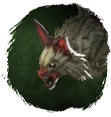
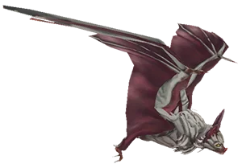
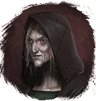

Открыть в интерактивной вики →

| Уровень | 20 |
|---|---|
| Прокачка | есть |
| Ранг в стае | 2 |
| Здоровье | 700 |
| Мана | 400 |
| Выносливость | 600 |
| Статистика | Уровень: 22, ранг: 2, здоровье: 700, мана: 400, выносливость: 600 |
Цена
6к  Золото
Золото
ЗолотоГде взять
Покупается у Ведьмы Хёберль

Ведьма ХёберльНавыки


Скины
Доп. информация
Требуемый уровень: 22
Цена: 6 000 золота
Покупка: у Ведьмы Хоберль на Болоте
Можно получить во время основного задания «Зелёная граница»
Может получать опыт — ДА
Описание
 | Неприметная летучая мышка, которая умеет помочь в бою. Прокусывает кожу жертвы, вызывая кровотечение, и может заразить рану. Наносит дополнительный урон звуковыми волнами. Атакует физически, издалека и ментально. Использует: Звуковая волна, Укус, Заражение. | |